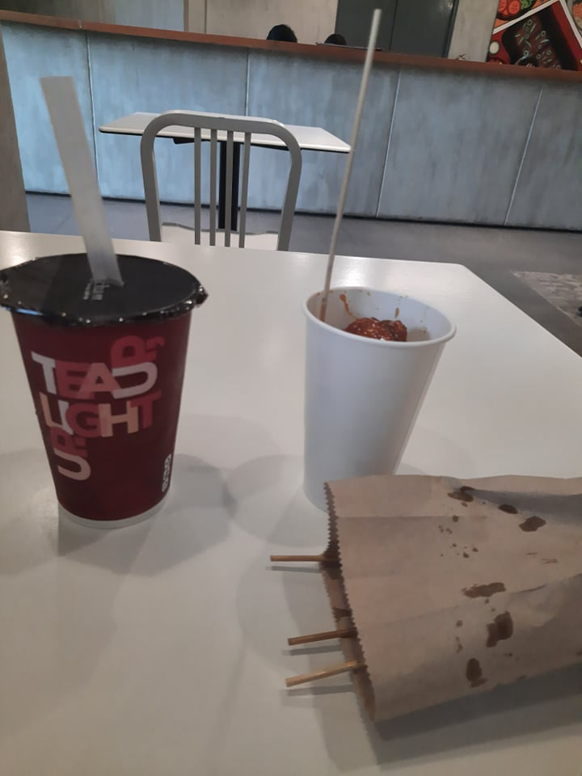

Ciocon's Blog
PART 4 super last dc
Part 4 and hopefully the last dc fandome post. Aside from those dc projects, they will also be releasing a trailer for the first ever dceu tv show, Peacmaker. The show is written and directed by the suicide squad director, James Gunn. It is set after the events of the movie where waller assigns a task to peacemaker. The last time we saw peacemaker was when he got "killed" by bloodsport and also in the credits scene where he was still alive. The show will also introduce Peacmaker's partner, Vigilante/Adrian Chase. The last time we saw vigilanter was in the arrow show. they made vigilante and adrian chase 2 completely different characters. The costume design for vigilante in the Peacemaker show looks great tho. also excited for that
PART 3 flash
For the flash movie. They might release a teaser for the Flash movie coming out in december of 2022. The movie is said to go back to previous dceu events and rewrite them all, creating a new dc universe. The dceu is a mess right now and the flash movie might fix that. We dont even know who is superman right now. Michael Keaton's Batman, Ben Affleck's batman, and Sasha Calle's supergirl has been confirmed to appear in the film. Maybe they will also pay back the previous encounter Ezra's flash and Grant's flash meeting in the speed force back in crisis on infinite earths. We might get a first look and teaser for the flash as well. For the tv show side of flash. Season 8, the last season, is gonna come out on November 16. So far we know that it will start off with a 5 episode crossover event. Leaked set photos show Grant's flash wearing gold boots. It took them 7 years to give the fans what they want and that is gold boots. Hopefully the writing will improve and they can end the show in a very good and memorable way. They still need to pay off the Flash vs Reverse Flash fight in season 1 where thawne ended up killing barry's mother. overall, super excited for what dc has to offer us tonight or tomorrow.
PART 2 of pre dc fandome thoughts
Aside from the Batman, they will also be releasing a first look at Black Adam and The Flash. Black Adam has been in production for more than 10 years now. It was announced in 2007 that the rock, Dawayne Johnson, will be playing Black Adam in the Shazam film. He was already casted as black adam before the entire marvel cinematic universe existed. Black Adam is the first hero that the gods chose during ancient times but he turned out to be a bad guy because the gods did not choose wisely. In 2019 they chose Billy Batson to be SHAZAM. Shazam has the powers of the gods. the wisdom of Solomon, strength of Hercules, stamina of Atlas, power of Zeus, courage of Achilles, and the speed of Mercury. spelling the name SHAZAM. Hopefully we get to see a first look or a teaser of the Black Adam movie. Super excited. part 3 soon.
Back and dcfandome
Took a break from blogging and coding for 23 days. I got my 2nd vaccine shot. Experienced side effects. Mocha gave birth to 2 puppies, Oreo and Peanut. I finished my react project, built a meme generator using apis and react. DC Fandome is in 8 hours, so hyped. It is an event where they showcase upcoming DC projects, release new trailers and footage. They will be focusing on the upcoming Batman film this dc fandome, they will release the official trailer for it. So far we have a teaser , some photos that were posted by the director, and set photos and videos. They had a test screening again and it is a nearly 3hour long detective noir film. We are finally gonna be getting a detective batman in live action. The closest we got to that was in the dark knight movie in 2008 where he got fingerprints off a shattered bullet. The story reportedly takes place on halloween and will go on for a week. Bruce keeps a journal that he narrates to the audience(batman year one vibes). Speaking of year one this will not be an origin story for him but it is his 2nd year as batman where he is still not respected as a hero but more of a vigilante. The people who watched the film said that it will contain some horror elements and the riddler is just straight up scary. Robert's portrayal of the batman is said to be great. Jeffreu Wright, the actor who plays commisioner gordon and the watcher in marvel's what if , said that Robert did an amazing job as batman. He created 3 personas, Batman, Bruce Wayne, and himself. part 2 soon.
Goodnight sleep and donuts
It is the 23rd its thursday. Not much happened today yet, we just had a chinese quiz. Yesterday was a rainy day. I finished season 1 of Lucifer. I ate fries and donuts. Chewy is still a handful. At 1month old she like poops every hour which smells really bad. She is very vocal unlike Mina. Mina got trapped in the movie room for the whole night and she didn't even make a singe sound but if you cage Chewy she will bark like theres no tomorrow. I am 40% done with learning react. I still have like 3 more hours to go. I slept early yesterday. Haven't done that in a while cuz school. yeah ty
Biking and new puppy
My friends and I decideed to go biking last saturday. I waited outside of his house and my former classmates passed by they did'nt recognize me at first they said goodmorning.It was aj's first time biking in the streets so he was still new to all of it. He got tired wuickly and we stopped a few times to take breaks. When we were almost to the destination he got cramps. sad. but we still managed to get to the destination and we had a good time. oh and we got a new puppy her name is chew she is a white lbrador
Comelec website done and react not
I finished my comeelc website project. It featured my new mobile navbar that has the menu icon animaton. I also updated the menu icons on my previous websites as well. I enrolled in a new course in scrimba about learning react. It is my 2nd day of learning react and it is not that hard yet. Im taking notes to help me remember and understand it. So far i know understand react componenets and functions and working on the map array method.
New Project and semi mastered react
Today is September 14. My last post was on september 11. Coundn't blog for the past days because i was busy with school work and coding. Teachers hae given a ton of classworks of us to finish. They already started to give the major pts of this quarter. I finished my react task tracker. Probably gonna make it a few more times to fully master it. Currently working on the website for the COMELEC. Have a great day ty.
Leadershift
So today we had leadersip training. Woke up way too early for that cuz program started at 8 and attendance was checked in the middle of the program. Didn't have breakfast today cuz there was nothing to eat. The program was alrigth if it wasn't for the kid that I got grouped with he was unbearable. Even the facilitator got tired of him but at first it was funny as it went on everyine got tired of him. After the program i just chilled and did socials . I went to the mall at 5 to buy stuff but there was no charger available so i got a shirt instead. I bought chicken, potato sticks, and milktea for my snacks and it was nice.
React and Body aches
So the aftermath of yesterday's workout was that I got aching all through out my body like the core and hamstrings. I woke up with muscle pains. Today was a different day than the others. I started learning React Js its kinda like javascript but broken down into smaller components so that it will be more convenient Im currently working on a task tracker app. I made and ate fried rice for breakfast. I attended my first club meeting the start up club. ngl it was awkward af cuz nobody was participating. ty
Workout and pizza
SO today i had a work out session for the first time in a while. the teacher assigned us some exercises to do and they were super tiring. Maybe its bcuz that i haven't exercised in a long time or the exercise it slef were tiring . There was jogging, squats, sit-ups, and planking. I also cleaned my shoes after delaying it for almost a week. We had pizza for snaks and it was good. Have a good night everyone
Aced precal
So teacher just released the scores for the precal long test. nailed it. got a perfect score except for the problem solving soution. he just said 43 out of 43. thats cuz i just char char the problem solving. ty.
Skol day again
Just finished my precal test. I think i did a pretty good job except for the problem solving, it was confusing. Test was not that hard just repeating questions and common sense ones. Couldn't blog yesterday sorry bout that fell asleep for 3 hours after class and woke up for dinner. Didn't also do much yesterday just some basic school works and ate pizza from nicks. It was alright.
Pfizer hit hard
You might already know that I got vaccinated yesterday, and when u get vaccinated u experience side effects. Sooo i think i had a fever today together with some very painful headaches . I also made iced chocolate, and cooked food instead of buying. I was almost gonna order a burger from foodpanda but i made the wise decision to save and make food instead road to new earphones. ty
Pfizer
Got vaccinated today with my girlfriend and cousins. The injection was not that very painful. The just said to take a deep breath. It was a quick and no that really painful vaccine. After the vaccine I experienced some side effects likle headache and feeling tired so I slept the whole afternoon.oh and i got new slippers.
Club Fair
Today we get to pick what club we're gonna be joining. Couldn't attned the club fair cuz comelec meeting. izz aight tho. I think there are 4 choices for ur club. Im not sure tho. But i think im gonna go with the start up club.
Skol day lol
Finished school. We didn't do much today just some basic math and a test in emtech
Blog Post One
Made a clock website with a background that you can change liliput35.github.io/clock